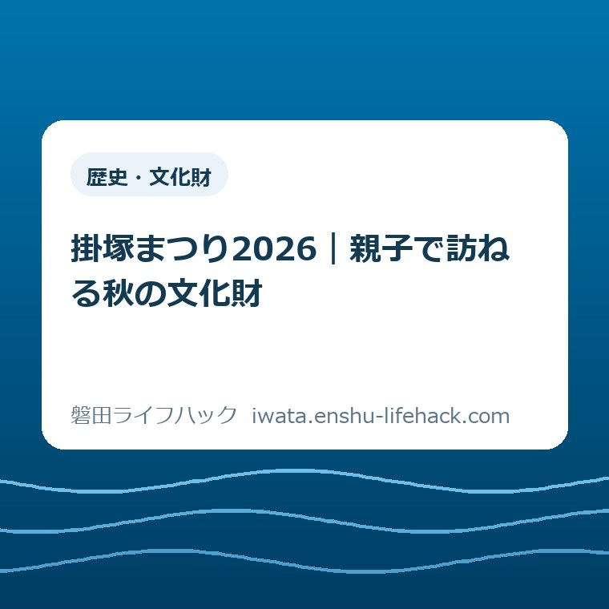

歴史・文化財
掛塚まつり2026｜親子で訪ねる秋の文化財

この記事の要点
Q. 掛塚まつりへ子どもと行きたい。いつ、何を決めればいい？
A. 掛塚まつりは2026年10月17日（土）・18日（日）、磐田市の貴船神社周辺で開催予定です。県指定無形民俗文化財の掛塚祭屋台囃子に耳を向ける休日を考えてみてください。運行時刻・交通規制・臨時駐車場は今回の確認資料では未確認です。今日は家族で訪問日を一つ選び、出発前に市公式ページから最新案内を確かめます。
家族の外出にも、祭りの準備にも時間がかかる
掛塚まつりへ子どもと出かけるには、休日を空けるだけでは足りません。食事や着替え、きょうだいの予定、帰宅後の片付けまで考える保護者の手間があります。現地へ着くまでに、すでに一仕事を終えている。その負担を、秋のお出かけという言葉だけで軽く扱いたくありません。
祭りを迎える側にも、演奏や屋台の運行に向けた準備があります。見物する時間の外に、地域の人が使っている時間があると私は考えます。ただし、掛塚で2026年に何人が何時間を担うかは未確認です。人数の不足や負担額を想像で書かず、訪ねる側が増やさずに済む手間から考えます。
大石浩之（磐田市／不動産業）です。この記事では制度の利用案内ではなく、家族の訪問計画を扱います。歩ける距離、音への反応、同行する大人の人数で、無理のない過ごし方は変わります。全家庭に同じ順路や滞在時間を勧めることはできません。
私は、親子の目的を「屋台囃子を聴く」に絞る計画を提案します。祭りのすべてを一日で理解させる必要はありません。耳に残った音が一つあれば、地元の文化財について家で話す入口になります。予定を増やすより、帰れる余裕を残すほうが、家族の休日には役立つと考えます。
掛塚まつり2026の予定と、まだ決められないこと
磐田市「磐田市観光イベント年間予定」の2026年度一覧では、掛塚まつりは10月17日・18日、会場は貴船神社周辺です。ページの更新日は2026年9月17日。この記事では2026年10月7日に原文を確認しました。17日は土曜日、18日は日曜日に当たります。
出典は磐田市公式の観光イベント年間予定です。年間予定は、家族のカレンダーに候補日を入れるための資料です。掲載された会場名だけから、屋台が通る道や親子向けの観覧場所までは読み取れません。
| 項目 | 確認できた内容・残る確認 |
|---|---|
| 日程 | 2026年10月17日（土）・18日（日）の予定 |
| 会場 | 貴船神社周辺 |
| 文化財 | 掛塚祭屋台囃子は県指定無形民俗文化財 |
| 当日の運行 | 運行時刻・経路は今回の確認資料では未確認 |
| 交通・設備 | 交通規制・臨時駐車場・トイレの配置は未確認 |
「未確認」は「用意されない」という意味ではありません。今回読んだ市の年間予定と文化財紹介では、当日の細部を確定できないという意味です。臨時駐車場があるつもりで車を出したり、神社へ着けば必ず演奏を聴けると決めたりする材料にはしません。
私なら、日付を選ぶ段階と、出発時刻を決める段階を分けます。両方を一度に決めようとすると、足りない情報を推測で埋めたくなるからです。まず家庭の都合に合う日を選び、運行や交通の案内が確かめられてから、到着と帰宅の見通しを合わせます。

目で見る屋台に、耳で触れる文化財がある
磐田市の「掛塚祭屋台囃子」紹介ページは、貴船神社の祭典で曳き廻される屋台の中で、大太鼓・小太鼓・横笛などによって演奏される囃子と説明しています。文化財として挙げられている名前は「掛塚祭屋台囃子」です。
屋台という言葉から、飾りや形を眺める場面を思い浮かべるかもしれません。私が親子の入口に選びたいのは、動く屋台の中で人が音をつないでいる点です。写真に残る姿だけを探していると、耳で受け取れるものを通り過ぎてしまう。その違いは、子どもへの声のかけ方にも表れます。
磐田市の「無形民俗文化財」一覧には、県指定の欄に掛塚祭屋台囃子が掲載されています。同じ欄に5分の紹介動画へのリンクもあります。文化財の種類と、事前に触れられる記録の入口を、一つのページで確認できます。
家で映像を見るなら、私は楽器の名前を全部覚える課題にはしません。「低い音と高い音、どちらに気づいた？」と一つ尋ねる程度で十分だと考えます。答えがなくても構いません。親が感想を先に決めず、子どもが何に反応するかを見ておくと、当日に聴く楽しみが残ります。
動画は過去の記録であり、2026年の進行表ではありません。画面に映る場所で同じ時刻に見られる、同じ位置から撮影できる、とは判断しないでください。音や雰囲気に触れるための資料と、当日の移動を決める資料では、確かめられることが違います。
祭りを支える人の営みに目を向ける読み物として、中野白山神社の白酒と仕込みの記事もあります。地域の文化を、見える場面の前にある準備から考える入口です。別の祭礼なので、日程や見学の条件を掛塚まつりへ当てはめないようにします。
土曜と日曜は、家族の帰宅後まで比べて選ぶ
10月17日と18日のどちらを選ぶかは、家族の生活予定から考えられます。今回の資料では、曜日別の混雑差や演奏の見どころの違いを確定できません。「土曜日なら空く」「日曜日が子連れ向け」といった順位は付けず、同行できる人と休める時間を比べます。
例えば、土曜日に家族の仕事が入る家庭なら、同行できる大人がそろう日曜日が候補になります。日曜日の夕方に翌日の準備をまとめたい家庭なら、土曜日を候補にできます。これは家庭の予定を比べる例です。祭りの実施内容が曜日でどう違うかを説明するものではありません。
子どもの食事や昼寝と、移動が重なるかも見ます。昼寝をする子と、長く歩きたい子が一緒なら、全員が同じペースで進めるとは限りません。片方に合わせてもう片方を待たせ続けるより、休憩や切り上げの合図を、大人同士で共有する計画を私は勧めます。
訪問日は一つ選べば十分です。二日とも行く約束を先にすると、初日の疲れが残った場合に変更しにくくなります。家族のカレンダーには、選んだ日と「当日の体調と公式案内を見て判断」と添える程度にします。予定を入れることと、必ず出かける約束は分けられます。
私は、どちらの日なら文化財をよく見せられるかより、帰宅後に無理が残らないのはどちらかを優先します。夕食を作る人、片付けをする人、翌日の持ち物をそろえる人の予定も、家族の予定です。現地にいる時間だけを休日の楽しさの尺度にしないほうが、訪問日の相談は具体的になります。
移動は、会場への往路と帰りの余力を一組にする
貴船神社周辺への子連れ移動は、出発から帰宅までを一組にして考える必要があります。地図で会場を見つけても、当日の道路の使い方や、車から降りた後の歩行区間までは決まりません。ここでは距離や所要時間を断定せず、交通案内を読む際の確認項目を整理します。
車の場合は、利用できる駐車場所を先に確かめます。地図上の空き地や店舗の駐車場を、見物客が使える場所として扱わないことです。駐車場の場所が分かった後も、そこから会場へ歩く経路と帰り道を確認します。着いてから停める場所を探し続ける前提は、子どもの待ち時間も増やします。
公共交通を選ぶ場合は、行きの便と帰りの便を同じメモに置きます。この記事では利用路線、臨時便、運賃、停留所の変更を確認していません。祭りの日の案内を確認してから、降りた場所へ戻れるかを考えます。往路だけ調べた状態を、帰宅までの計画ができた状態とは考えません。
ベビーカーを使う家庭では、荷物を載せられる利点と、混雑時に向きを変える負担の両方があります。会場全体が通行しやすいという確認は取れていません。使える道を現地の案内で確かめ、狭い場所へ入る前に引き返せるかを見ます。抱っこへ替える場合も、大人が荷物ごと無理なく持てるかで判断します。
トイレや休憩場所も、写真や地図の印だけで利用可能と決めません。祭り当日に使える場所か、子どもと入れるかを確認する対象です。必要な設備の場所が分からないときは、滞在を延ばす計画を立てない。その線を先に引いておくほうが、現地で大人が焦らずに済むと私は考えます。
徒歩の距離を見積もる考え方は、磐田のウォーキングマップで休日を考える記事でも整理しています。ただし、通常の散策コースは祭り当日の通行案内ではありません。掛塚の当日の移動には、その日の規制と現地の誘導を優先します。
現地では「聴く・反応を見る・離れる」を選べるように
屋台囃子を親子で楽しむ計画では、子どもが音をどう受け止めるかを見ながら距離を調整します。屋台に近づくことだけを目標にすると、驚いたときに離れる判断が遅れます。観覧できる場所を現地の案内で確かめ、最初は無理に前へ進まない形を私は提案します。
家の動画で聴いた音と、屋外で聞こえる音は、子どもにとって同じ体験とは限りません。興味を示せば立ち止まり、嫌がれば離れる。その反応を、せっかく来たのだからという大人の都合で打ち消さないようにします。耳をふさいだときは、感想を聞くより移動を優先する判断でよいと思います。
写真を撮る大人と、子どもを見る大人を分けられるなら、役割を短く伝えてから動きます。一人で同行する場合は、撮影を後回しにできます。屋台の動きや誘導から目を離さず、子どもと離れないことを先に考えます。撮れた写真の枚数を、その日の成果にはしません。
屋台を動かす人や演奏する人に、家族の撮影や鑑賞に合わせて止まってもらう前提を置かないことです。私は、通り道を空け、案内に沿って動く見物も、担い手への具体的な配慮だと考えます。詳しく知りたい気持ちがあっても、運行中の人を引き止めて質問する場面とは分けたいところです。
休憩や帰宅を選んだ後に、別の目的地を足す必要はありません。同じ竜洋方面に関心がある家庭には、竜洋十束公園の遊具と訪問前の確認という別日の候補もあります。この記事では祭りとの移動時間を確認していないため、当日の周遊コースとしては勧めません。

良い点——日付と文化財の入口を家で確かめられる
市の年間予定と文化財紹介を合わせて読むと、掛塚まつりを訪ねる候補日と、何に目を向けるかを家で考えられます。私は、現地へ行く前から文化財に触れられる点を評価します。子どもを連れて下見する時間が取れない家庭にも、相談の出発点があるからです。
特に、写真だけでなく短い映像への入口があることは、囃子を目的にする計画と相性がよいと感じます。文字をまだ読めない子どもとも、音について同じ話題を持てます。映像を最後まで見ることを義務にせず、関心が向いたところから会話を始められる点も、家庭で扱いやすいところです。
市内の文化財を知る機会が、遠方への旅行と同じ準備量を必ず求めるわけではないことにも意味があります。ただし、市内なら移動が楽だと一括りにはできません。住む場所や同行者で負担は変わります。公表された入口を、自分の家族に合う計画へ小さく組み替えられることが利点です。
注文したい点——家族には日付の次の情報も要る
子連れの訪問判断には、開催日と会場名に加えて、当日の交通と休める場所の情報が必要です。今回確認した資料だけでは、その部分を埋められません。私は、年間予定から当日の案内へたどる道筋が分かりやすいと助かると考えます。資料が存在しないと断定する注文ではありません。
知りたいのは、演奏を見逃さない裏技よりも、家族が途中で帰れるかです。例えば、交通規制の図があるなら歩ける道を読みたい。駐車場の案内があるなら、利用できる時間を知りたい。情報を足す人にも手間があるため、既にある正式案内の場所が分かるだけでも、家庭の判断は進みます。
現地に着いてから担い手へ同じ質問を繰り返さなくて済むよう、訪ねる側も公開案内を読むところまで引き受けたいと思います。確認先が見つからなければ、推測で予定を固めない。情報の不足を現地の誰かが全部埋めてくれるという計画は、家族にも迎える側にも余裕を残しません。
対案・結論——今日は家族で訪問日を一つ選ぶ
今日の一歩は、10月17日か18日のどちらを訪問日にするか、家族で選ぶことです。この記事を読んだ2026年10月7日の段階で、細かな行程まで完成させる必要はありません。同行できる人、子どもの休息、帰宅後の予定を比べ、一つの候補日に印を付ければ相談は前に進みます。
メモを残すなら、「訪問候補日」「同行者」「帰宅後に外せない予定」の三つで足ります。時刻を調べていない欄には、調べていないと書いておきます。空欄を予想で埋めないことで、後から別の家族が読んだときに、決まったことと確認待ちのことを取り違えずに済みます。
出発前には、市公式の年間予定から新しい案内を確認してください。交通や運行の条件が家族の予定に合わなければ、訪問を見送る判断も残せます。予定を変えることは、祭りへの関心を失うことではありません。現地に行けなくても、紹介動画から文化財を知る入口はあります。
大石の視点——文化財を見せたい気持ちだけでは動けない
私は、家族の段取りから文化財への入口を考えます。文化財を見せたい気持ちだけで、家族も担い手も動かせない。先に帰れる段取りを作る。この順番は譲りたくありません。伝統を大切にする言葉を増やすより、誰が子どもを見て、いつ切り上げるかを話すほうが、訪問の負担を具体的に減らせるからです。
私なら、家族のカレンダーで二つの候補日を見比べる場面を考えます。屋台囃子をしっかり聴く時間を取りたい気持ちと、帰宅後に疲れを残したくない気持ちの間で迷います。それでも、現地で子どもが嫌がったら帰れる予定を選びます。これは実際の訪問談ではなく、訪問計画についての私の意見です。
地域の祭りに触れる入口は、大人が解説を言い切る場面だけではないと思います。帰り道に子どもが口にした音や、家に戻って思い出した屋台の姿を聞くことも、その続きです。感想を提出させる休日にせず、家族の中に次の疑問が残るくらいの訪ね方を、私は勧めます。
FAQ——掛塚まつり2026の訪問前に
掛塚まつり2026は、いつ、どこで開かれますか？
磐田市の2026年度観光イベント年間予定では、2026年10月17日（土）・18日（日）、貴船神社周辺で開催予定です。2026年10月7日に確認しました。年間予定は当日の運行表とは異なります。親子で訪ねる場合は家族の都合に合う日を選び、出発前に市公式ページから開催や交通の最新案内を確認してください。
屋台囃子は何が文化財なのですか？
掛塚祭屋台囃子は県指定無形民俗文化財です。磐田市は、貴船神社の祭典で曳き廻される屋台の中で、大太鼓・小太鼓・横笛などによって演奏される囃子と紹介しています。市の文化財ページには5分の紹介動画へのリンクがあります。動画は文化財を知るための記録であり、2026年の運行時刻を示すものではありません。
臨時駐車場や屋台の運行時刻は分かりますか？
今回確認した市の年間予定と文化財紹介では、2026年当日の運行時刻・交通規制・臨時駐車場は未確認です。用意されないという意味ではありません。車で行く場合も公共交通の場合も、利用できる場所や経路を推測で決めず、市公式から最新の案内を確かめてください。トイレや休憩場所の配置も今回の資料では確認できていません。
掲載情報は2026年10月7日時点です。開催内容や交通案内は変更される場合があり、参加のしやすさも家族の条件で変わります。最後は磐田市公式ページで最新情報を確認してください。
参考にした公式情報
- 磐田市観光イベント年間予定／磐田市（2026年10月7日確認）
- 無形民俗文化財／磐田市（2026年10月7日確認）
- 掛塚祭屋台囃子／磐田市（2026年10月7日確認）
最終確認日：2026-10-07 ／ 本記事は公表情報と執筆者の見解を分けて記載しています。制度・数値・公開状況は変更される場合があるため、最新情報は磐田市公式ページでご確認ください。

大石浩之（磐田市／不動産業・宅地建物取引士）